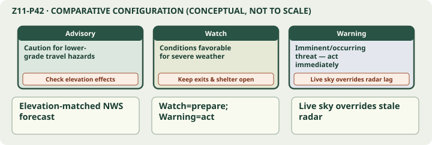

Z11-P42 · Navigation, weather and rescue · New manuscript
Interpret official NWS weather forecasts, Watches, Warnings and radar lag
Use official forecasts accurately while accounting for elevation differences, rural radar gaps and alert-tier urgency.
When it applies · Pre-trip weather checks and live weather monitoring across rural, mountain and backcountry zones.
Equipment · Official NWS zone/point forecast, NOAA Weather Radio and alert-enabled phone.

Actions
- Read point forecasts matched to your actual route elevation and terrain rather than a distant lowland city—temperatures drop markedly with elevation and local storm cells vary across counties.[T14, N06, X10]
- Distinguish official tiers cleanly: Advisory (caution/inconvenience), Watch (conditions favorable; prepare and stay flexible) and Warning (imminent or occurring threat; act/shelter immediately).[T16, T14]
- Recognize that phone radar images can lag several minutes behind reality and miss low-altitude mountain/valley precipitation beams—never let a stale green radar screen override real darkening skies and thunder overhead.[T14, N06, E18]
Failure recognition · Relying on a city forecast 40 miles away and 3,000 feet lower, or standing under building thunder because a cached radar app still shows clear air.[N06, T16, E07]
Verify · Check both the elevation-matched NWS point forecast and active Watch/Warning status immediately before stepping onto the trail.[T14, T16, ED]
Stop or change course · Real-time severe local cues (thunder, outflow gusts, rising water, whiteout) ALWAYS override an optimistic or delayed phone forecast.[T16, E18, N07]
Evidence and editorial notes
- E07 · NWS · Lightning Tips (current web edition)
- Section: If you hear thunder; when it is safe to return · Conditions: Thunderstorm and reachable substantial building or enclosed hard-topped vehicle
Support: Move to proper shelter at thunder. Wait 30 minutes after last thunder before resuming outdoor activity.
Limitations: Fabric tents, open pavilions, and trees are not lightning-safe shelters. · Conflicting evidence: None; 30-minute rule is standard NWS guidance.
Editorial note: Separates weather cover from lightning protection in Z02. · Specialist reviewer: Weather safety and emergency management
Primary source · checked 2026-11-24 - E18 · NWS · Thunderstorm Safety (current web edition)
- Section: Thunderstorm Safety > Hail, Downbursts, and Flooding · Conditions: Approaching severe thunderstorm with hail, outflow gusts, or heavy rain
Support: Outflow gusts, hail, lightning, and flash runoff can strike before rain arrives at camp; break exposed ridge travel early and secure or vacate lightweight shelters.
Limitations: Storm cells can intensify faster than backcountry foot travel can clear exposed terrain. · Conflicting evidence: None; integrates with E04 and E07.
Editorial note: Connects storm-structure warning cues to early shelter selection. · Specialist reviewer: Weather safety and emergency management
Primary source · checked 2026-11-24 - N06 · NOAA NWS · JetStream Online School for Weather (current web edition)
- Section: JetStream > Clouds, Fronts and Atmospheric Pressure · Conditions: Field weather observation and short-term storm anticipation
Support: Thickening high-to-low cloud decks, rapid barometric drops, towering cumulus building into anvils and backing/shifting winds often signal approaching frontal systems or convective storms.
Limitations: Local visual weather signs supplement—and never replace—official NWS forecasts and active warnings. · Conflicting evidence: None; separates physical weather cues from folklore sayings.
Editorial note: Grounds cloud, front, wind-shift and microclimate weather cards in Z11. · Specialist reviewer: Meteorology and outdoor leadership
Primary source · checked 2026-11-24 - N07 · NWS · Fog Safety (current web edition)
- Section: Fog Safety > Visibility Loss and Travel Hazards · Conditions: Dense fog, valley mist, sea fog and blowing-snow whiteout
Support: Fog and whiteout collapse visual landmarks and depth perception rapidly, causing disorientation and unintentional terrain/traffic hazards; halt exposed travel early and rely on verified checkpoints or stay put.
Limitations: Compass bearings alone cannot reveal hidden cliffs, thin ice or drop-offs in zero visibility. · Conflicting evidence: Aligns with B014-P11 whiteout guidance.
Editorial note: Supports whiteout/fog stop thresholds and short-leg navigation boundaries. · Specialist reviewer: Meteorology and search and rescue
Primary source · checked 2026-11-24 - T14 · FEMA / Ready.gov · Emergency Alerts (current web edition)
- Section: Emergency Alerts > WEA, EAS, and NOAA Weather Radio · Conditions: Receiving time-critical hazard warnings at home or outdoors
Support: Use multiple redundant alert channels—Wireless Emergency Alerts, local opt-in alerts, and battery/crank NOAA Weather Radio—so a single dead phone or tower outage does not eliminate warning reception.
Limitations: Backcountry terrain can block both cellular and VHF weather radio reception. · Conflicting evidence: None; aligns with NOAA-NWR.
Editorial note: Grounds emergency warning redundancy in Z01 communication cards. · Specialist reviewer: Emergency management and communications
Primary source · checked 2026-11-24 - T16 · NWS · Flood Safety (current web edition)
- Section: Flood Safety > Turn Around Don't Drown and Flash Flood Warnings · Conditions: Watch vs Warning decisions near rivers, creeks, and low roads
Support: Distinguish a Watch (conditions favorable; prepare and adjust route) from a Warning (hazard imminent or occurring; move to higher ground immediately); never walk or drive into floodwater.
Limitations: Flash floods can crest rapidly in narrow drainages before warnings reach offline hikers. · Conflicting evidence: None; aligns with E04 and T07.
Editorial note: Clarifies Watch vs Warning decision thresholds in Z01 scenarios. · Specialist reviewer: Emergency management and meteorology
Primary source · checked 2026-11-24 - X10 · NPS · Rocky Mountain Safety (High-Elevation and Mountain Travel) (current web edition)
- Section: Rocky Mountain Safety > Afternoon Lightning, Rapid Cooling and Steep Terrain · Conditions: High-elevation ridges, alpine passes and mountain weather
Support: Mountain temperatures drop sharply with elevation and sunset, afternoon thunderstorms build rapidly over exposed ridges (requiring early starts and turning back below treeline), and steep snowfields conceal runout hazards.
Limitations: Clear morning skies routinely shift to severe lightning and sleet by early afternoon. · Conflicting evidence: None; integrates with E07, E23 and CDC-ALT.
Editorial note: Grounds mountain timing, treeline retreat and elevation-cooling cards. · Specialist reviewer: Mountain safety and meteorology
Primary source · checked 2026-11-24
Source lineage · NWS alerts and Ready.gov alerts; new manuscript · Classification · New manuscript.